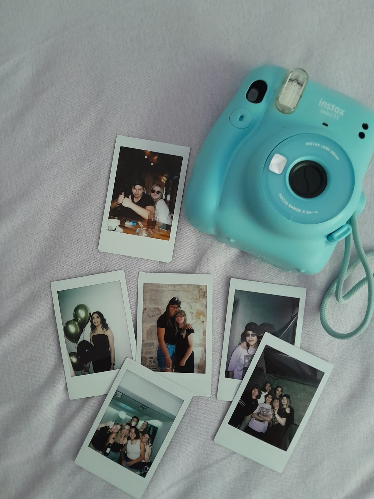
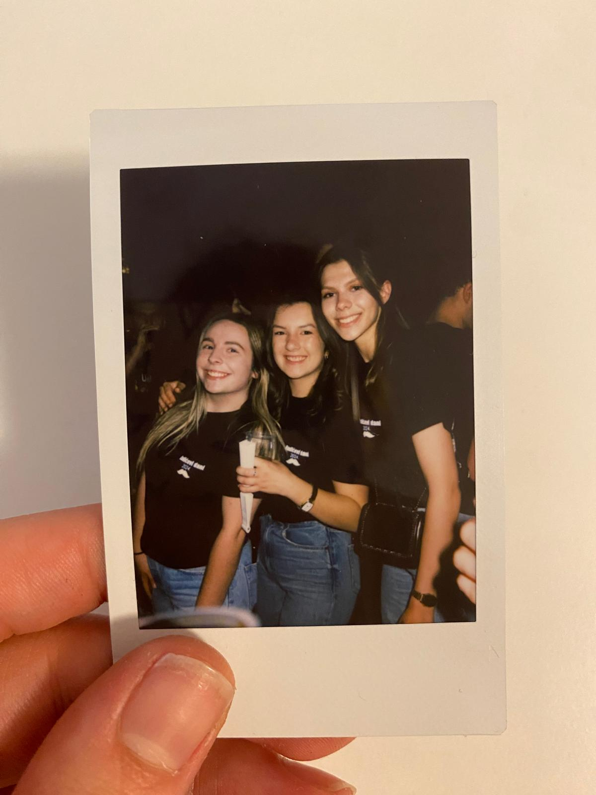
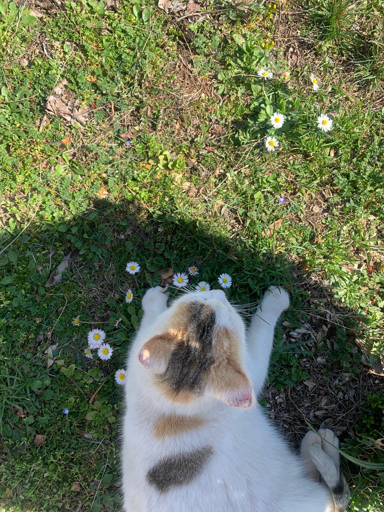
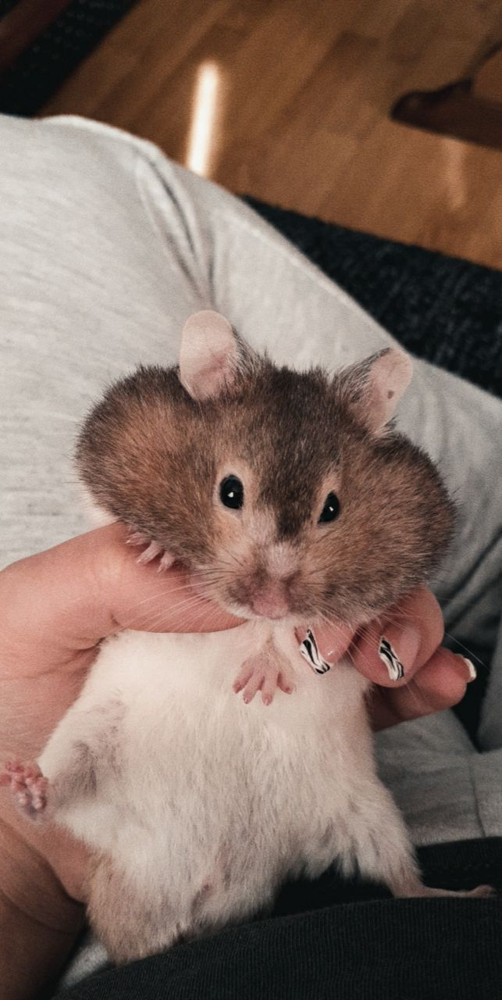

Zovem se Nikolina Grubišić i imam 20.godina. Dolazim iz malog mjesta Posušja koji se nalazi u Hercegovini. Trenutno studiram i živim u Zagrebu. Kreativnost i dizajn uvijek su me zanimali i privlačili pažnju te je Grafički fakultet bio odličan izbor studija. Volim avanture i istraživanje novih mjesta te sve to volim zabilježiti Polaroidom jer fotografija za meni znači stvaranje trajnih uspomena.
 Đorđe Balešević je jedan od mojih dražih izvođača.Njegova djela me dotiču na osobnoj razini te osjećam utočište u njegovim riječima i djelima. Slušajući Balaševića osjećam se opušteno te su me njegova djela „natjerala“ da zavolim balade i poeziju. Volim slušati poeziju jer imam osjećaj da je to najbolji način da se povežes s autorom i zaviriš u njegovu dušu.
ZaboraviLjubav prema životinjama se razvila od malih nogu. Imam nekoliko kućnih ljubimaca s kojima sam usko vezana te mi trenutno jako fale.
 